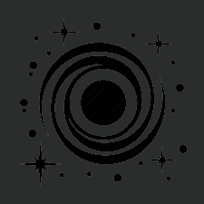

-

Według ogólnej teorii względności czarna dziura jest zamkniętym obszarem czasoprzestrzeni, którego nie może opuścić ani promieniowanie, ani cząstki o różnej od zera masie spoczynkowej; proces odwrotny jest możliwy. Granicę czarnej dziury nazywa się horyzontem zdarzeń. Jeśli pominąć efekty kwantowe, okazuje się, że czarna dziura nie może się rozpaść, ani zniknąć, jest możliwe natomiast łączenie się czarnych dziur. W otoczeniu horyzontu nie zachodzą żadne wyróżniające tę powierzchnię zjawiska, natomiast wewnątrz niego znajduje się tzw. osobliwość — miejsce, gdzie siły grawitacyjne i gęstość energii dążą do nieskończoności.
-

galaktyka to potężny zbiór. Składają się na niego między innymi gwiazdy, planety oraz ogromne ilości pyłu i gazów. To co nadaje galaktyce takiego znaczenia i sprawia, że jest ona tematem wielu naukowych dysput to fakt występowania w niej dotąd niewyjaśnionego elementu, czyli tzw. „ciemnej materii”. Nie wiadomo co ją wytwarza, ale fakty potwierdzają, że dzięki niej gwiazdy poruszają się po orbitach – jest to więc warunek konieczny do powstania galaktyki. Jak już zapewne wiesz nasza galaktyka jest tylko jedną z wielu, jednak odległości między nimi są tak ogromne (miliony lat świetlnych), że obecna technologia nie pozwala człowiekowi na bezpieczne przebycie tej drogi. Każda galaktyka, którą udało się odkryć człowiekowi ma również jeszcze jeden bardzo ważny element – swój własny układ słoneczny.
-
Układ planetarny jest zbiorem planet i ich księżyców orbitujących wokół bardziej masywnego obiektu, którym jest gwiazda. W poszczególnych galaktykach jest ich całe miliony więc nic dziwnego, że niektóre z nich wyglądają bardzo podobnie do naszego układu słonecznego. Tak jak praktycznie wszystko we wszechświecie nie są obiektami zorganizowanymi, dlatego stosunkowo często (w skali życia wszechświata) dochodzi do zderzeń różnych układów planetarnych a co za tym idzie do ich destrukcji. Nasz układ słoneczny składa się z ośmiu planet, oraz wielu planet karłowatych, pasów asteroid i komet. W samej drodze mlecznej występuje co najmniej 8,8 miliardów układów planetarnych podobnych do naszego.